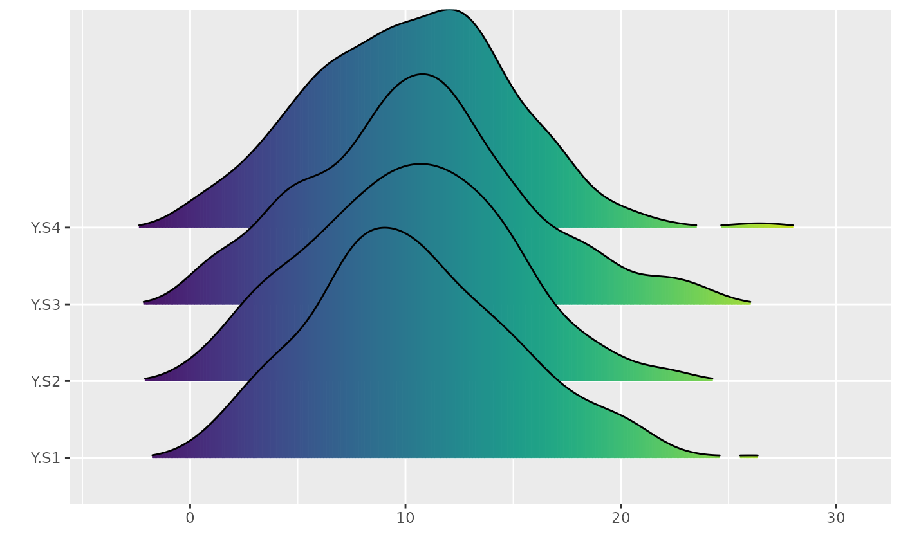

Generates ggridges density ridge plots for all series combined and
per-series per-calendar-month variants. Supports optional zero-value
exclusion via ignore_zeros and zero_threshold.
Value
A list with two elements: plot_all (full ridge plot for all
series) and plot_monthly (named list of per-month ridge plots per
series).
Examples
# Synthetic xts
set.seed(123)
dates <- seq(as.POSIXct("2000-01-01"), as.POSIXct("2000-12-31"), by = "day")
vals <- matrix(rnorm(length(dates) * 4, 10, 5), nrow = length(dates), ncol = 4)
colnames(vals) <- c("S1", "S2", "S3", "S4")
ts <- xts::xts(vals, order.by = dates)
ridges <- ridge_plots(ts, ignore_zeros = TRUE)
ridges$plot_all
#> Warning: The dot-dot notation (`..x..`) was deprecated in ggplot2 3.4.0.
#> ℹ Please use `after_stat(x)` instead.
#> ℹ The deprecated feature was likely used in the anyFit package.
#> Please report the issue at <https://github.com/Gapouliasis/anyFit/issues>.
#> Picking joint bandwidth of 1.3
